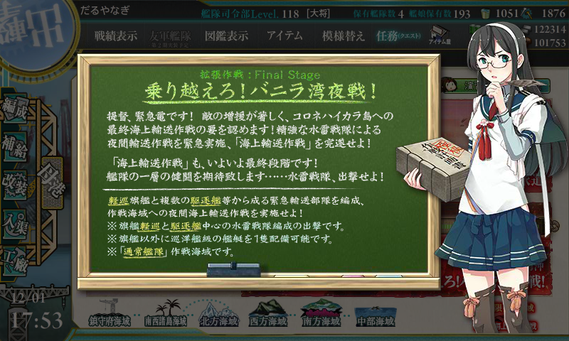
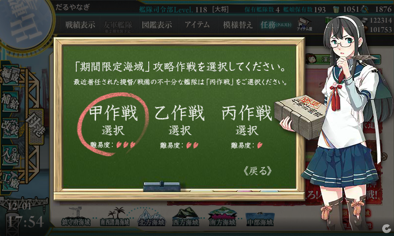
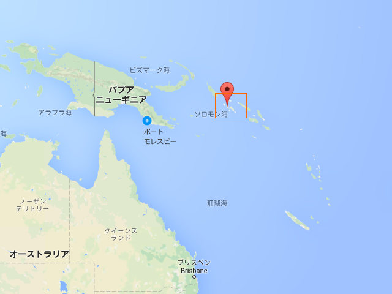
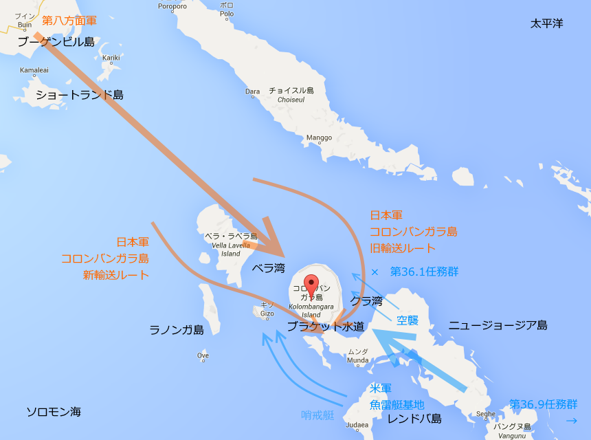
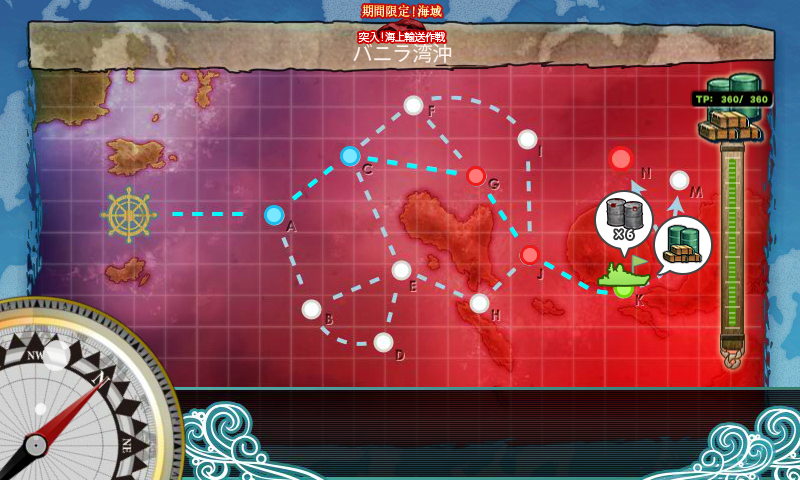
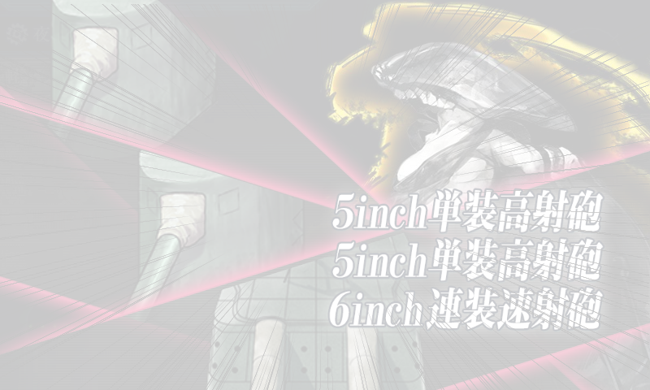
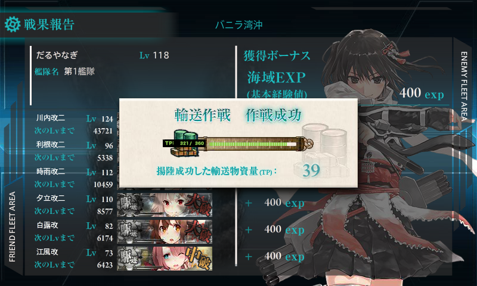
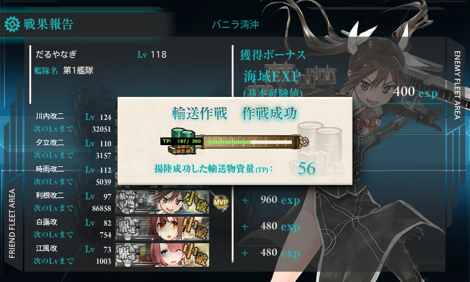
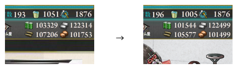
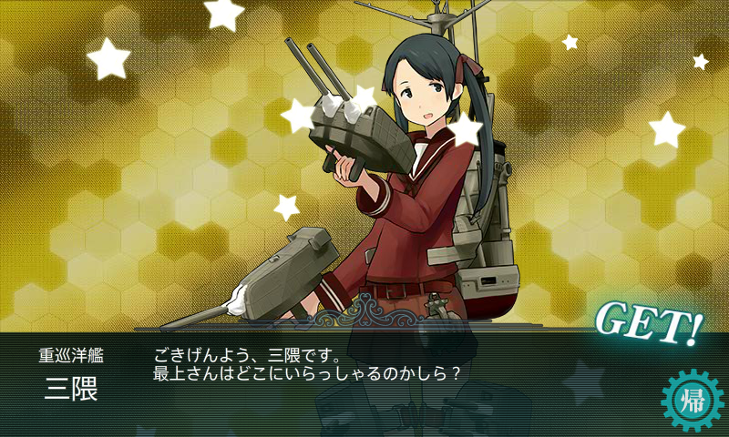

艦これ 2015 秋イベント E-5 バニラ湾沖 前編
公開日：

とうとうファイナルステージ！……なんだけど。このステージは 輸送作戦＋ゲージ破壊 の二本立てになっていて、実質は2ステージ分のボリュームがある。あやうくイベントを消化し損ねるところだった。

難易度はもちろん【甲作戦】で。
史実の復習
このマップは ベラ湾夜戦 - Wikipedia を元にしているっぽくて、それに参加した艦艇を入れると楽にボスへ到達できる。

舞台はソロモン海に浮かぶニュージョージア、コロンバンガラ、ベラ・ラベラなどの島々。
1943年7月、アメリカ軍はレンドバ島、ニュージョージア島へ相次いで上陸。しかし、迎え撃つ日本海軍も、5日夜のクラ湾夜戦（三水戦が海戦に勝利するも輸送には失敗）、12日夜のコロンバンガラ島沖海戦（二水戦の増援を得て海戦に勝利、「神通」を喪失）で第36.1任務群に打撃を与え、ソロモン方面で活動しているのは第36.9任務群のみとなった。この機に乗じて日本海軍は重巡洋艦を繰り出し、第36.9任務群を掃討しようとしたが、この艦隊は他の方面に展開していたため空振り。かえって陸上基地からの夜間爆撃を受けて退却する羽目になった。

そこで、日本海軍はコロンバンガラ島への輸送ルートをベラ湾・ブラケット水道経由にスイッチ。しかし、こっちにはレンドバ島にいた魚雷艇の部隊が「東京急行」を警戒していたのでした（ちなみに、この魚雷艇の一隻に若き日のケネディが乗っていたんだそうな）。
この魚雷艇隊は日本の「東京急行」を阻むことができなかったが、どうやら敵は駆逐艦が小規模に分散して逐次輸送を行っているらしいということを知った米軍（指揮官はアーレイ・バークさん。アーレイ・バーク級のアレやな）は、第31.2任務群の駆逐艦6隻をかき集めて投入。たまたま通りがかった不幸な日本の駆逐艦たちが血祭りにあげられたみたいな感じっぽい。
参加艦艇
- ブイン輸送隊：軽巡洋艦「川内」
- コロンバンガラ輸送隊：駆逐艦「萩風」、「嵐」、「江風」
- 警戒隊：駆逐艦「時雨」
餌食になったのはコロンバンガラ輸送隊で、敵の損失ゼロに対して味方は三隻が全滅した。夜戦でやられ続けていた米海軍も、これで自信を持ったやろうなぁ。
編成と戦闘経過

前述通り、史実通りに組めばルート固定らしい。ルートが固定されているのは精神的に楽とはいえ、軽巡1（旗艦）＋駆逐4隻＋自由枠1 という出撃制限がある上、夜戦マスが多くて事故が多い。消費資源こそそれほど多くないものの、参加メンバーが固定なので、傷つけばバケツ消費は不可避。
- 「川内」（軽巡旗艦）：主砲×2、夜偵
- 「利根」（自由枠）：主砲×2、夜偵、瑞雲（つよいやつ）
- 「時雨」：主砲×2、照明弾
- 「夕立」：主砲×2、照明弾
- 「白露」：ドラム缶×3
- 「江風」：ドラム缶×3
駆逐艦はなんとなく白露型でそろえたくなったので。ほんとうは「雪風」とかのほうがいいと思う。
駆逐艦はドラム缶ガン積みでも、道中の夜戦ならば割とダメージは出るのね。2隻はドラム缶専門にしちゃったけど、そのせいでボスへの到達率が落ちたような気はしない（だいたい夜戦でワンパンくらうので）。ただし、連撃できないのでボスにはまったくダメージが期待できない。
自由枠は航空巡洋艦が好み。戦闘ゲージ削りは雷巡でもいいかもしれないな。
- A → C → G：S勝利 → J：A勝利（「夕立」大破撤退）
- A → C → G：S勝利 → J：A勝利 → F → L：A勝利 → M：ボス A勝利
- A → C → G：S勝利 → J：A勝利 → F → L：S勝利 → M：ボス A勝利
- A → C → G：S勝利 → J：A勝利 → F → L：A勝利（「江風」大破撤退）
- A → C → G：S勝利（「川内」大破撤退）
- A → C → G：S勝利 → J：A勝利 → F → L：B勝利（「白露」大破撤退）
- A → C → G：S勝利 → J：A勝利（「夕立」大破撤退）
- A → C → G：S勝利 → J：S勝利 → F → L：A勝利 → M：ボス A勝利
- A → C → G：S勝利 → J：A勝利 → F → L：A勝利 → M：ボス S勝利
- A → C → G：S勝利 → J：A勝利 → F → L：A勝利（「夕立」大破撤退）
- A → C → G：S勝利 → J：A勝利（「時雨」大破撤退）
- A → C → G：S勝利 → J：A勝利 → F → L：A勝利 → M：ボス A勝利
- A → C → G：S勝利 → J：A勝利 → F → L：A勝利 → M：ボス A勝利
- A → C → G：S勝利（「夕立」大破撤退）
- A → C → G：S勝利 → J：A勝利（「夕立」大破撤退）
- A → C → G：S勝利 → J：A勝利 → F → L：A勝利 → M：ボス A勝利
- A → C → G：A勝利 → J：S勝利 → F → L：A勝利 → M：ボス A勝利（「夕立」大破、ダメコン未消費）
- A → C → G：S勝利（「利根」大破撤退）
- A → C → G：S勝利 → J：S勝利 → F → L：S勝利 → M：ボス A勝利
19戦で輸送ゲージ破壊。道中支援はナシ（だって夜戦ばっかりやもん！）で、途中から決戦支援を出してみたけれど、結局 S 勝利は1個だけだった。

まぁ、夜戦だしねー 運頼みだしねー でも、輸送艦のくせにカットイン仕掛けてくるとか冗談きついすわ。これ、ドラム缶を夜戦道具に積み替えてもたいして事故を減らせない気がするんだが。
あと、やたら「夕立」が大破するんだけど……（#^ω^） 穴（設備増強）をあけていたのを思い出したので、最後の三戦はダメコンを入れて進軍してみたが、一度も使わずに済んだ。もっと早く思い出していれば、何回か出撃回数を減らせたかも。

輸送ポイントは A 勝利で 39 獲得。

S 勝利で 56 獲得。ボス到達率は50％未満だったので、気長にやるのが精神的にいいかも。

資源消費は、燃料1,800、弾薬1,700、鋼材は遠征でむしろ増えた……。ボーキサイトは300。バケツの消費は46と意外に少なかった感じ。一戦につき2.5個の消費だな。もっとも一隻だけ大破して、ボスまで行けなかったパターンが多かったからかもしれない。
ドロップ

割とうれしい(＾ω＾)
戦力ゲージ破壊も頑張ろう(＾ω＾)